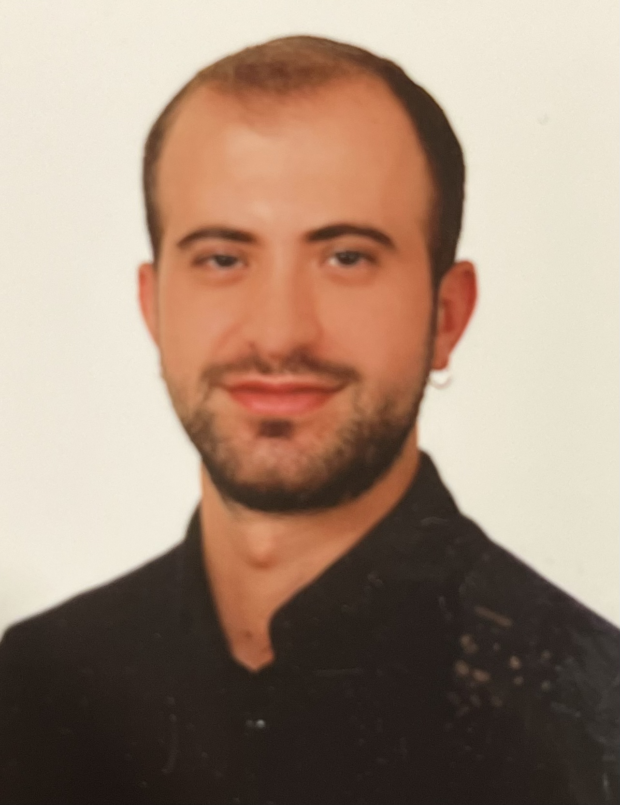

Akademik & Klinik Portföy
İleri Terapötik Endoskopi • ERCP • Endoskopik Ultrasonografi • Pankreatobiliyer Hastalıklar • İnflamatuvar Bağırsak Hastalıkları

Klinik İlgi Alanları
ERCP • EUS • İleri Endoskopi
Tıp Eğitimi
2008–2015
İç Hastalıkları Anabilim Dalı
2016–2021
Gastroenteroloji Kliniği
2023–2026
Gastroenteroloji Uzmanı
Ekim 2026–Günümüz
Klinik pratiği; gastrointestinal sistem, pankreas ve safra yolu hastalıklarının tanı ve tedavisi üzerine yoğunlaşmakta olup, özellikle ileri terapötik endoskopi alanında çalışmaktadır.
Akademik çalışmalarım ağırlıklı olarak ileri pankreatobiliyer endoskopi ve kompleks endoskopik girişimlerin klinik sonuçları üzerine yoğunlaşmaktadır.
İleri ERCP teknikleri, kompleks safra yolu darlıkları ve güç biliyer erişimin endoskopik tedavisi.
Karaciğer nakli sonrası gelişen biliyer komplikasyonların endoskopik tedavisi ve uzun dönem sonuçları.
Kompleks safra yolu yaralanmaları ve biliyer anatomik varyasyonların endoskopik ve multidisipliner yönetimi.
EUS eşliğinde drenaj, direkt endoskopik nekrozektomi ve pankreatik sıvı koleksiyonlarının tedavi stratejileri.
İnflamatuvar bağırsak hastalıklarında klinik sonuçlar, tedavi yanıtı ve komplikasyonlar.
Hakemli dergilerde yayımlanan bilimsel çalışmalar akademik profil üzerinden görüntülenebilir.
Bu bölüm hazırlanmaktadır.
Bu bölüm hazırlanmaktadır.
Mesleki iletişim ve akademik iş birlikleri için ulaşabilirsiniz.
Eklenecek
Daha sonra eklenecek
Profil bağlantısı eklenecek